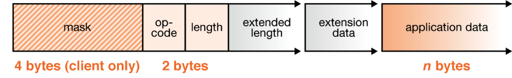

<section id="after-intro" class="page-wrapper light-bg">
  <div class="container">
    <div class="row page-content">
      <h2>
        About HTML5 WebSocket
      </h2>
      <p>
        The HTML5 WebSockets specification defines an API that enables web pages to use the WebSockets protocol for two-way communication with a remote host. It introduces the WebSocket interface and defines a full-duplex communication channel that operates through
        a single socket over the Web. HTML5 WebSockets provide an enormous reduction in unnecessary network traffic and latency compared to the unscalable polling and long-polling solutions that were used to simulate a full-duplex connection by maintaining
        two connections.
      </p>
      <p>
        HTML5 WebSockets account for network hazards such as proxies and firewalls, making streaming possible over any connection, and with the ability to support upstream and downstream communications over a single connection, HTML5 WebSockets-based applications
        place less burden on servers, allowing existing machines to support more concurrent connections. The following figure shows a basic WebSocket-based architecture in which browsers use a WebSocket connection for full-duplex, direct communication
        with remote hosts.
      </p>
      
      <p>
        One of the more unique features WebSockets provide is its ability to traverse firewalls and proxies, a problem area for many applications. Comet-style applications typically employ long-polling as a rudimentary line of defense against firewalls and proxies.
        The technique is effective, but is not well suited for applications that have sub-500 millisecond latency or high throughput requirements. Plugin-based technologies such as Adobe Flash, also provide some level of socket support, but have long
        been burdened with the very proxy and firewall traversal problems that WebSockets now resolve.
      </p>
      <p>
        A WebSocket detects the presence of a proxy server and automatically sets up a tunnel to pass through the proxy. The tunnel is established by issuing an HTTP CONNECT statement to the proxy server, which requests for the proxy server to open a TCP/IP connection
        to a specific host and port. Once the tunnel is set up, communication can flow unimpeded through the proxy. Since HTTP/S works in a similar fashion, secure WebSockets over SSL can leverage the same HTTP CONNECT technique. Note that WebSockets
        are just beginning to be supported by modern browsers (Chrome now supports WebSockets natively). However, backward-compatible implementations that enable today's browsers to take advantage of this emerging technology are available.
      </p>
      <p>
        WebSockets—like other pieces of the HTML5 effort such as Local Storage and Geolocation—was originally part of the HTML5 specification, but was moved to a separate standards document to keep the specification focused. WebSockets has been submitted to the
        Internet Engineering Task Force (IETF) by its creators, the Web Hypertext Application Technology Working Group (WHATWG). Authors, evangelists, and companies involved in the standardization still refer to the original set of features, including
        WebSockets, as "HTML5."
      </p>
      <h2>
        The WebSocket Protocol
      </h2>
      <p>
        The WebSocket protocol was designed to work well with the existing Web infrastructure. As part of this design principle, the protocol specification defines that the WebSocket connection starts its life as an HTTP connection, guaranteeing full backwards compatibility with the pre-WebSocket world. The protocol switch from HTTP to WebSocket is referred to as a the WebSocket handshake.
      </p>
        The browser sends a request to the server, indicating that it wants to switch protocols from HTTP to WebSocket. The client expresses its desire through the Upgrade header:
      </p>
      <pre class="prettyprint text-left">
GET ws://echo.websocket.org/?encoding=text HTTP/1.1
Origin: http://websocket.org
Cookie: __utma=99as
Connection: Upgrade
Host: echo.websocket.org
Sec-WebSocket-Key: uRovscZjNol/umbTt5uKmw==
Upgrade: websocket
Sec-WebSocket-Version: 13</pre>
      <p>
        If the server understands the WebSocket protocol, it agrees to the protocol switch through the Upgrade header.
      </p>
      <pre class="prettyprint text-left">
HTTP/1.1 101 WebSocket Protocol Handshake
Date: Fri, 10 Feb 2012 17:38:18 GMT
Connection: Upgrade
Server: Kaazing Gateway
Upgrade: WebSocket
Access-Control-Allow-Origin: http://websocket.org
Access-Control-Allow-Credentials: true
Sec-WebSocket-Accept: rLHCkw/SKsO9GAH/ZSFhBATDKrU=
Access-Control-Allow-Headers: content-type</pre>
      <p>
        At this point the HTTP connection breaks down and is replaced by the WebSocket connection over the same underlying TCP/IP connection. The WebSocket connection uses the same ports as HTTP (80) and HTTPS (443), by default.
      </p>
      <p>
        At this point the HTTP connection breaks down and is replaced by the WebSocket connection over the same underlying TCP/IP connection. The WebSocket connection uses the same ports as HTTP (80) and HTTPS (443), by default.
      </p>
      
      <h2>Using the HTML5 WebSocket API</h2>
      <p>
        With the introduction of one succinct interface (see the following listing), developers can replace techniques such as long-polling and "forever frames," and as a result further reduce latency.
      </p>
      <pre class="prettyprint text-left">
[Constructor(in DOMString url, optional in DOMString protocol)]
interface WebSocket {
  readonly attribute DOMString URL;
  // ready state
  const unsigned short CONNECTING = 0;
  const unsigned short OPEN = 1;
  const unsigned short CLOSED = 2;
  readonly attribute unsigned short readyState;
  readonly attribute unsigned long bufferedAmount;

  // networking
  attribute Function onopen;
  attribute Function onmessage;
  attribute Function onclose;
  boolean send(in DOMString data);
  void close();
};
WebSocket implements EventTarget;</pre>
      <p>
        Utilizing the WebSocket interface couldn't be simpler. To connect to an end-point, just create a new WebSocket instance, providing the new object with a URL that represents the end-point to which you wish to connect, as shown in the following example. Note that a ws:// and wss:// prefix are proposed to indicate a WebSocket and a secure WebSocket connection, respectively.
      </p>
      <pre class="prettyprint language-js text-left">
var myWebSocket = new WebSocket("ws://www.websockets.org");</pre>
      <p>
        A WebSocket connection is established by upgrading from the HTTP protocol to the WebSockets protocol during the initial handshake between the client and the server. The connection itself is exposed via the "onmessage" and "send" functions defined by the WebSocket interface.
      </p>
      <p>
        Before connecting to an end-point and sending a message, you can associate a series of event listeners to handle each phase of the connection life-cycle as shown in the following example.
      </p>
      <pre class="prettyprint language-js text-left">
myWebSocket.onopen = function(evt) { alert("Connection open ..."); };
myWebSocket.onmessage = function(evt) { alert( "Received Message: " + evt.data); };
myWebSocket.onclose = function(evt) { alert("Connection closed."); };      </pre>
      <p>
        To send a message to the server, simply call "send" and provide the content you wish to deliver. After sending the message, call "close" to terminate the connection, as shown in the following example. As you can see, it really couldn't be much easier.
      </p>
      <pre class="prettyprint language-js text-left">
myWebSocket.send("Hello WebSockets!");
myWebSocket.close();</pre>
    </div>
  </div>
</section>